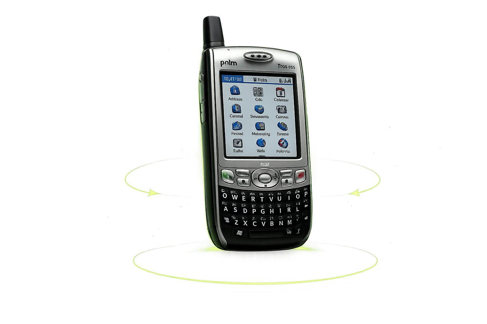
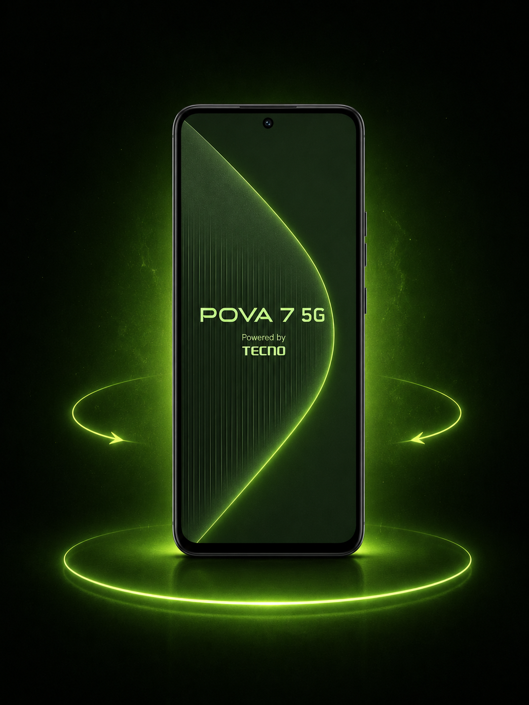

The Treo 650 didn't exist in a vacuum — it improved on Palm's own Treo 600 and went head-to-head with rivals like the BlackBerry 7290. Switch tabs to see how it compared.
The device the class was assigned against a modern smartphone from the same student's own phone collection — both shown side by side so the twenty-year jump is visible at a glance, no scrolling or tab-switching required.


| Hardware Component | Palm Treo 650 | Tecno Pova 7 5G | What Changed? (What's the Difference?) |
|---|---|---|---|
| Display Size & Tech | 2.4-inch TFT Resistive Touchscreen, 320 × 320 pixels | 6.78-inch FHD+ IPS LCD, 120Hz Capacitive Touchscreen | Larger screen and higher refresh rate for better visuals and smooth experience |
| Primary Input | Physical QWERTY Keyboard, Five-way Navigation Button, Stylus | Full Capacitive Multi-touch Screen with On-screen Keyboard | Physical buttons replaced by full touch interface |
| Battery Capacity (mAh) | 1800 mAh | 6000 mAh | Modern high-res screens and powerful processors need more power |
| Primary Use-Case | Mainly for calls, text messaging, email, and basic applications | Communication, social media, gaming, video streaming, photography, online learning, productivity, and AI-powered features | Calls/SMS only vs. pocket computer with advanced features |
| Palm Treo 650 | Palm Treo 600 (2003) | |
|---|---|---|
| Release Year | 2004 | 2003 |
| Display | 2.4" TFT Resistive | 2.5" Reflective Color STN |
| Resolution | 320 × 320 | 160 × 160 |
| Keyboard | Full Physical QWERTY | Full Physical QWERTY |
| Processor | Intel XScale PXA270 • 312 MHz | Motorola i.MXL • 144 MHz |
| Memory | 32 MB RAM | 32 MB RAM |
| Expansion | SD / SDIO / MMC Slot | No expansion slot |
| Camera | VGA (0.3 MP) | VGA (0.3 MP) |
| Battery | 1800 mAh Li-Ion | ~1500 mAh Li-Ion |
| Network | 2G GSM | 2G GSM / GPRS |
| Operating System | Palm OS Garnet 5.4.8 | Palm OS 5.2.1 |
Rival device specifications are approximate figures included for illustrative comparison only.
How four core components changed between a 2004 legacy device and a modern smartphone.
| Component | Palm Treo 650 | Modern Smartphone | What Changed? |
|---|---|---|---|
| Display Size & Tech | 2.4-inch TFT Resistive Touchscreen, 320 × 320 pixels | 6.78-inch FHD+ IPS LCD, 120 Hz Capacitive Touchscreen | Larger, sharper, faster-refreshing screens built for video and browsing, not just text. |
| Primary Input | Physical QWERTY Keyboard, Five-way Navigation Button, Stylus | Full Capacitive Multi-touch Screen with On-screen Keyboard | Physical buttons were replaced by full glass touch input. |
| Battery Capacity | 1800 mAh | 6000 mAh | Modern high-res screens and processors need far more power to run. |
| Primary Use-Case | Calls, text messaging, email, and basic applications | Communication, social media, gaming, video streaming, photography, online learning, productivity, and AI-powered features | A calls-and-SMS device became a pocket computer. |
Why did PDAs disappear? Smartphones combined all of their functions into one device. Instead of carrying a separate PDA for organizing schedules, contacts, and notes alongside a separate phone for communication, people preferred a single device that could do everything — especially once touchscreens, internet access, cameras, GPS, and apps arrived.
What physically limits how small a device can get? Battery size is one constraint — less internal space means shorter battery life and more frequent charging. Screen size is another — too small, and text, video, and typing all become impractical. Designers have to balance portability against usability.